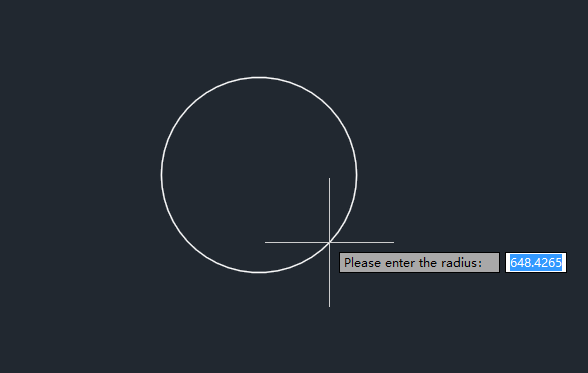

说明
拖动效果在ZWCAD中被广泛使用，它在创建、修改实体时具有所见即所得的特点。 本节介绍ZWCAD提供的最基本的Jig实现,采用的例子是用拖动的方式来创建一个圆形。
实现方法
实现Jig效果的核心是创建ZcEdJig类的一个子类,重写其中的几个虚函数sampler、update 和entity，以实现自己需要的效果，它们的作用如下:
(1)sampler:将被 ZcEdJig:: drag()函数调用以获得用户输入(用户输入点、角度等)。
(2)update:更新实体，以反映在用户输入变换的过程中，图形中的实体需要发生怎样的变化。
(3)entity:返回一个实体的指针，告诉ZWCAD哪个实体在被改变。 除此之外，一般会在子类中添加一个成员函数dolt(函数名称和变量都根据你的需求来 确定)，这个函数将被命令实现的函数所调用，对Jig对象进行初始化。
以下代码用CDrawCircleJig类实现了一个直线拖拽的过程：
CPP文件实现：
#include "CDrawCircleJig.h"
CDrawCircleJig::CDrawCircleJig(const ZcGeVector3d & normal)
{
m_centerPoint = ZcGePoint3d(0,0,0);
m_dRadius = 0.0;
m_normal = normal;
m_iPromptCount = 0;
}
CDrawCircleJig::~CDrawCircleJig()
{
}
void CDrawCircleJig::doIt()
{
m_pCircle = new ZcDbCircle(m_centerPoint, m_normal, m_dRadius);
setDispPrompt(_T("Please enter the center："));
ZcEdJig::DragStatus stat = drag();
m_iPromptCount = 1;
setDispPrompt(_T("Please enter the radius："));
stat = drag();
if (stat == ZcEdJig::kNormal)
{
append();
}
else
{
delete m_pCircle;
}
}
ZcEdJig::DragStatus CDrawCircleJig::sampler()
{
ZcEdJig::DragStatus stat;
setSpecialCursorType(ZcEdJig::kCrosshair);
setUserInputControls((UserInputControls)(ZcEdJig::kAccept3dCoordinates | ZcEdJig::kNoNegativeResponseAccepted | ZcEdJig::kNoZeroResponseAccepted));
if (m_iPromptCount == 0)
{
ZcGePoint3d inputPt;
stat = acquirePoint(inputPt);
if (stat == ZcEdJig::kNormal)
{
if (inputPt.isEqualTo(m_centerPoint))
{
return ZcEdJig::kNoChange;
}
m_centerPoint = inputPt;
}
}
else if (m_iPromptCount == 1)
{
double inputradius = -1;
stat = acquireDist(inputradius, m_centerPoint);
if (stat == ZcEdJig::kNormal)
{
if (inputradius == m_dRadius)
{
return ZcEdJig::kNoChange;
}
m_dRadius = inputradius;
}
}
return stat;
}
ZSoft::Boolean CDrawCircleJig::update()
{
switch (m_iPromptCount)
{
case 0:
m_pCircle->setCenter(m_centerPoint);
m_pCircle->setRadius(m_dRadius);
case 1:
m_pCircle->setRadius(m_dRadius);
default:
break;
}
return ZSoft::kTrue;
}
ZcDbEntity * CDrawCircleJig::entity() const
{
return m_pCircle;
}
头文件实现：
#include "stdafx.h"
#include "zdbjig.h"
#include "zdbents.h"
class CDrawCircleJig : public ZcEdJig
{
public:
CDrawCircleJig(const ZcGeVector3d &normal);
virtual ~CDrawCircleJig();
void doIt();
virtual ZcEdJig::DragStatus sampler();
virtual ZSoft::Boolean update();
virtual ZcDbEntity* entity() const;
private:
ZcDbCircle* m_pCircle;
ZcGePoint3d m_centerPoint;
ZcGeVector3d m_normal;
double m_dRadius;
int m_iPromptCount;
};
jig调用与命令注册：
void initApp()
{
zcedRegCmds->addCommand(_T("CIRCLEJIG_COMMANDS"), _T("CircleJig"), _T("CircleJig"), ZCRX_CMD_MODAL, CircleJig);
}
void unloadApp()
{
zcedRegCmds->removeGroup(_T("CIRCLEJIG_COMMANDS"));
}
void CircleJig()
{
ZcGeVector3d x = zcdbHostApplicationServices()->workingDatabase()->ucsxdir();
ZcGeVector3d y = zcdbHostApplicationServices()->workingDatabase()->ucsydir();
ZcGeVector3d normalVec = x.crossProduct(y);
normalVec.normalize();
CDrawCircleJig* pJig = new CDrawCircleJig(normalVec);
if (!pJig)
{
return;
}
pJig->doIt();
delete pJig;
}
关键参数说明：
Sampler函数中，首先需要进行交互操作，实例化一个形如 JigPromptXXXOptions 的提示选项类，检测用户的输入，用JigPrompts类(Sampler数的参数)的形如AcquireXXX的函数，得到用户的输入(PromptXXXResult类)。下表列出了与Jig交互操作有关的常用类名和函数名。
| 函数名 | 作用 |
|---|---|
| acquireAngle | 提示用户输入一个角度值 |
| acquireDist | 提示用户输入一段距离 |
| acquirePoint | 提示用户输入一个点 |
在调用 Sampler 函数时，可以通过setSpecialCursorType 对拖动光标的类型进行设置。CursorType枚举值如下表：
| 枚举值 | 作用 |
|---|---|
| kNoSpecialCursor | 与默认光标类似，基点与光标中心之间显示一条橡皮筋线(直线) |
| kCrosshair | 默认光标(十字光标) |
| kRectCursor | 与视图UCS方向一致的矩形窗口光标 |
| kRubberBand | 与默认光标类似，基点与光标中心之间显示一条橡皮筋线(直线) |
| kNotRotated | 与视图UCS方向一致的十字光标 |
| kTargetBox | OSNAP光标，与EntitySelect光标形式类似，其大小由系统变量APERTURE控制 |
| kRotatedCrosshair | 与当前UCS方向一致的十字光标 |
| kCrosshairNoRotate | 与当前UCS方向一致的十字光标，基点与光标中心之间显示一条橡皮筋线(直线) |
| kInvisible | 不显示光标 |
| kEntitySelect | 实体拾取框形式的光标 |
| kParallelogram | 与当前UCS方向一致的矩形窗口光标(可能显示为平行四边形) |
| kEntitySelectNoPersp | 光标形式与EntitySelect光标形式类似，但支持透视图，当需要在被选实体上确定一个精确点时使用 |
| kPkfirstOrGrips | 与默认光标类似 |
如要对用户的输入进行限制，则可以通过 setUserInputControls设置，UserInputControls枚举值，如下表所示：
| 枚举值 | 作用 |
|---|---|
| kGovernedByOrthoMode | 不需要设置 |
| kNullResponseAccepted | 禁止空输入 |
| kDontEchoCancelForCtrlC | 设置取消操作时不显示“*取消*” |
| kDontUpdateLastPoint | 禁止更新最后一点 |
| kNoDwgLimitsChecking | 不检查图形界限 |
| kNoZeroResponseAccepted | 禁止输入零 |
| kNoNegativeResponseAccepted | 禁止输入负数 |
| kAccept3dCoordinates | 允许输入三维点 |
| kAcceptMouseUpAsPoint | 设置鼠标按键释放为选择的点 |
| kAnyBlankTerminatesInput | 输入字符串时空格键终止字符串 |
| kInitialBlankTerminatesInput | 输入字符串时开始的空格键终止字符串 |
| kAcceptOtherInputString | 允许输入非关键字的字符串 |
| kGovernedByUCSDetect | 适用于UCS检测 |
| kNoZDirectionOrtho | 禁止在Z方向使用正交模式 |
运行结果：
执行CircleJig命令提示用选择一个起点“Set start point:"，然后用户拖动鼠标动态变化半径拖拽一个圆，点击确定后最终生成圆。
